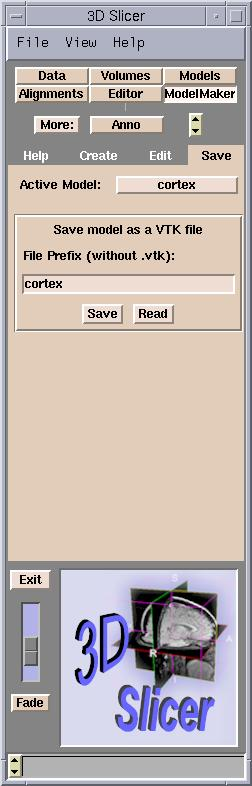
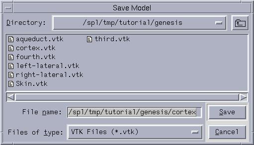

To save a model:
- On the Main menu, click ModelMaker.
- Click the Save tab.

- From the menu, select the model to save and click Save.
The Save Model dialog box appears.

- Select the path and click Save.
The model will be saved as a .vtk file,
which identifies the file as a model.